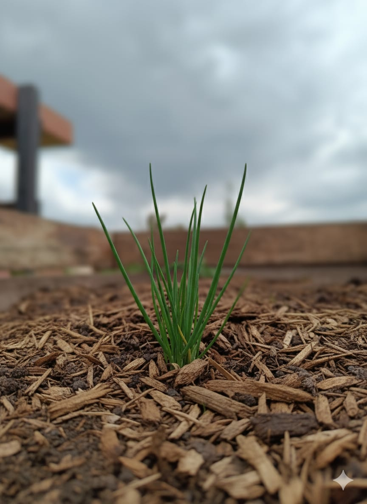
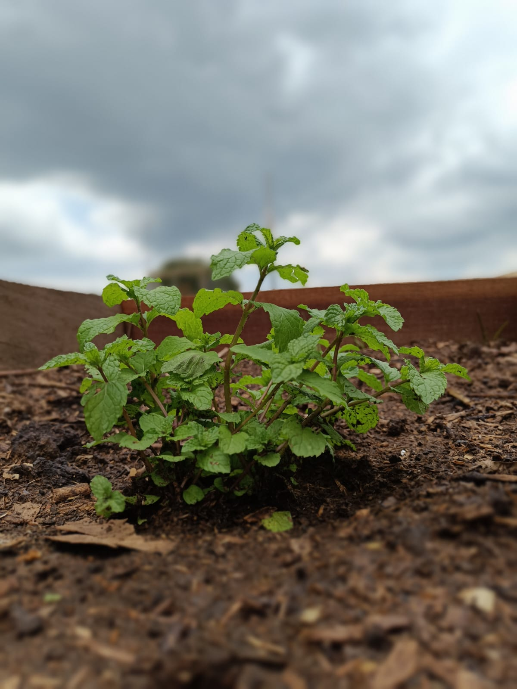
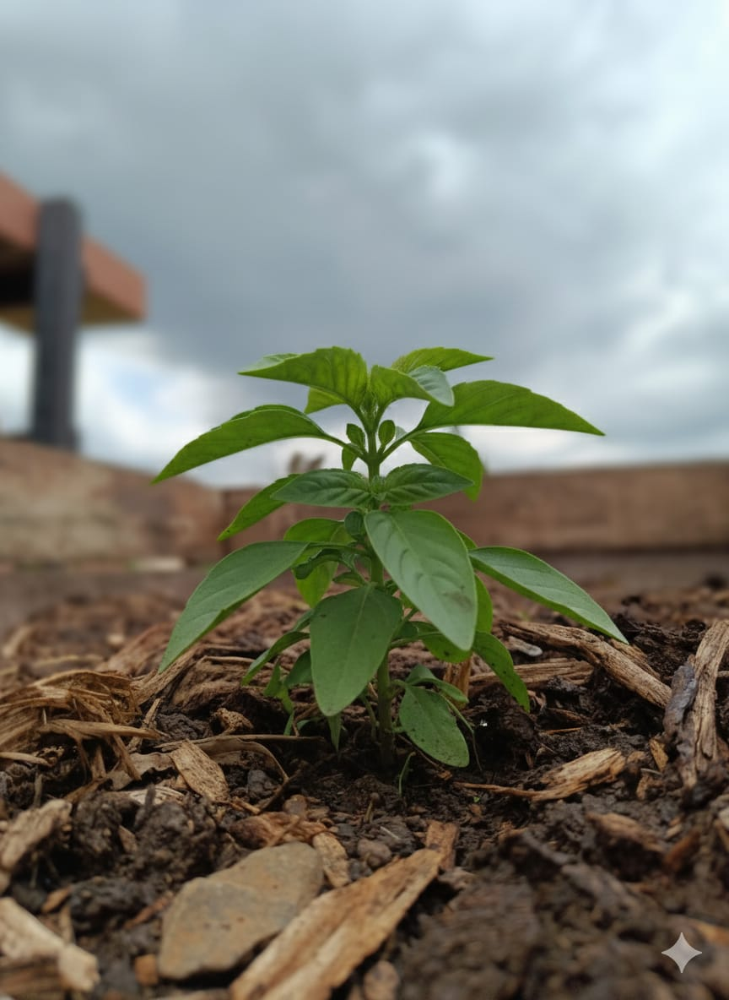
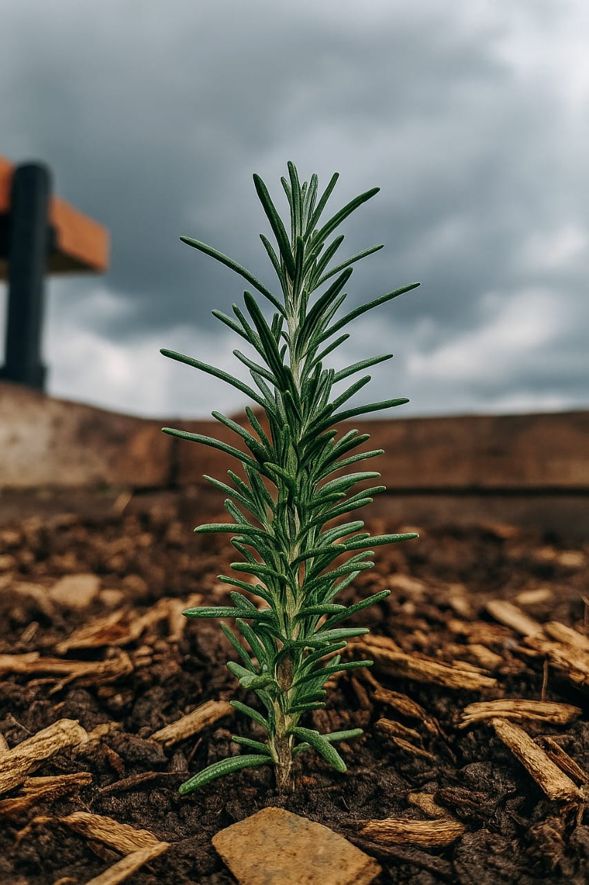
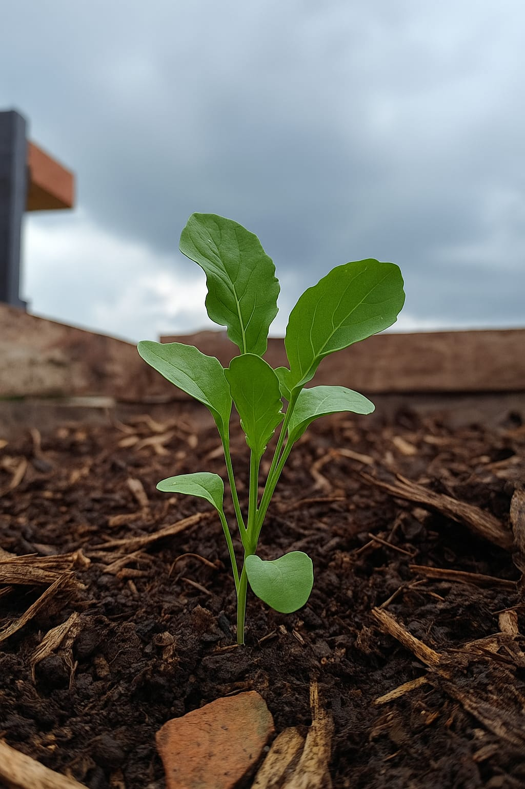

Nome científico: Allium fistulosum
Descrição da planta: Planta de folhas finas, ocas e verdes, com sabor e aroma suaves parecidos com o da cebola; cresce em touceiras e permite várias colheitas.
Data do plantio: 28/10/2025
Adubação usada: Esterco
Utilização: Usada como tempero em sopas, omeletes, saladas, molhos e refogados.
Curiosidade: Rica em vitaminas A e C, tem ação antioxidante e pode ser colhida várias vezes sem arrancar a planta.

Nome científico: Mentha spicata
Descrição da planta: Planta herbácea de folhas verdes, serrilhadas e aromáticas. Possui aroma refrescante e cresce facilmente em solos férteis e úmidos.
Data do plantio: 28/10/2025
Adubação usada: Esterco
Utilização: Utilizada em chás, sucos, temperos e também por suas propriedades medicinais, ajudando na digestão e no alívio de náuseas.
Curiosidade: A hortelã é cultivada há mais de 3.000 anos e era usada pelos egípcios antigos por seu aroma e valor medicinal.

Nome científico: Ocimum basilicum
Descrição da planta: Planta aromática de folhas verdes e lisas, muito perfumadas; flores pequenas e brancas; gosta de sol e calor.
Data do plantio: 28/10/2025
Adubação usada: Esterco
Utilização: Usado como tempero em massas, molhos, pizzas e chás; também na aromaterapia por suas propriedades calmantes e digestivas.
Curiosidade: Considerado símbolo de amor e proteção; seu aroma ajuda a afastar insetos e pode ser usado como planta ornamental.

Nome científico: Rosmarinus officinalis
Descrição da planta: Arbusto perene com folhas finas verde-acinzentadas, aromáticas, ramos lenhosos e pequenas flores azuladas ou lilases.
Data do plantio: 26/10/2025
Adubação usada: Esterco
Utilização: Temperar carnes, aves, batatas e pães; usado em chás e óleos essenciais por suas propriedades digestivas e antioxidantes.
Curiosidade: Símbolo de lembrança e fidelidade na Roma Antiga; aroma forte ajuda a afastar mosquitos.

Nome científico: Eruca vesicaria
Descrição da planta: Folhas verdes escuras, recortadas e com sabor picante. Cresce rapidamente e é ideal para saladas.
Data do plantio: 29/10/2025
Adubação usada: Esterco
Utilização: Consumida crua em saladas, sanduíches e pizzas, ou refogada. Rica em vitaminas e minerais.
Curiosidade: Conhecida desde o Império Romano, era considerada um afrodisíaco.